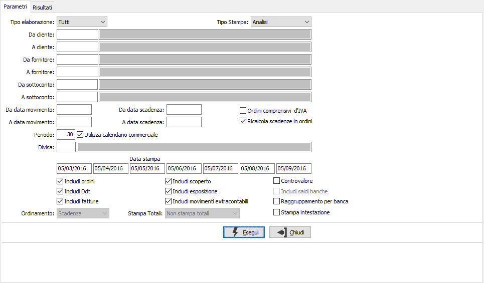
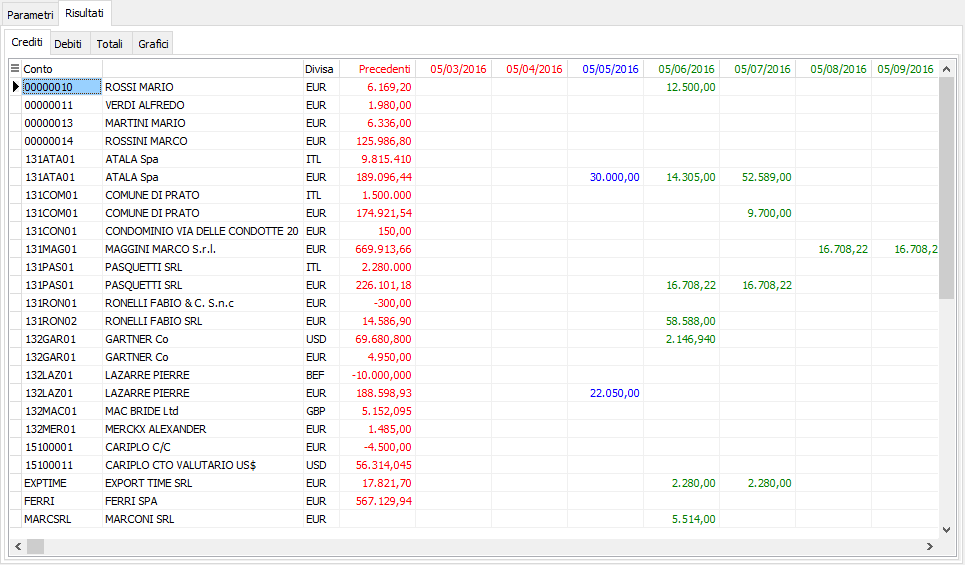
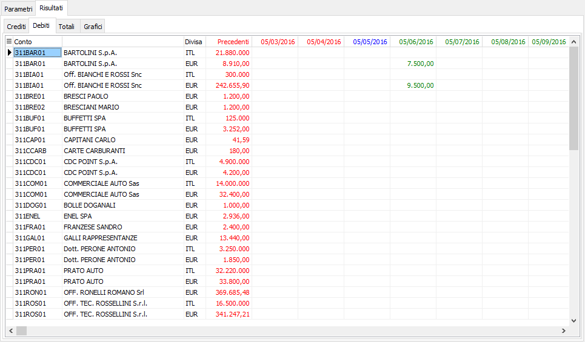
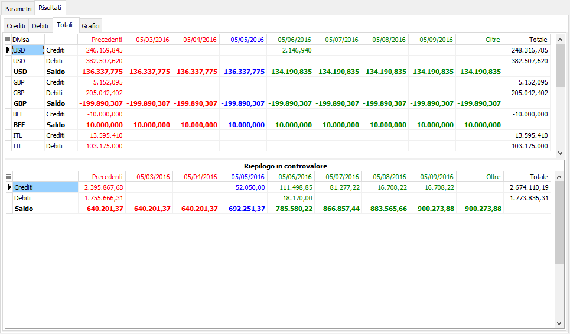
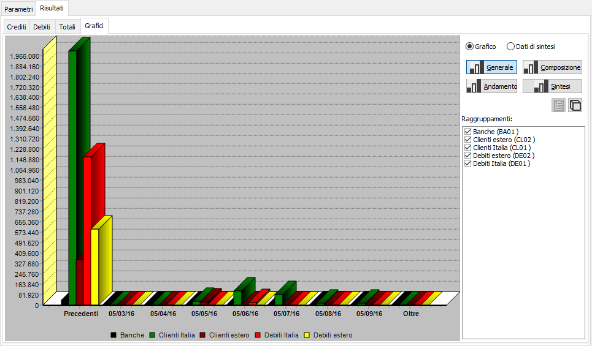
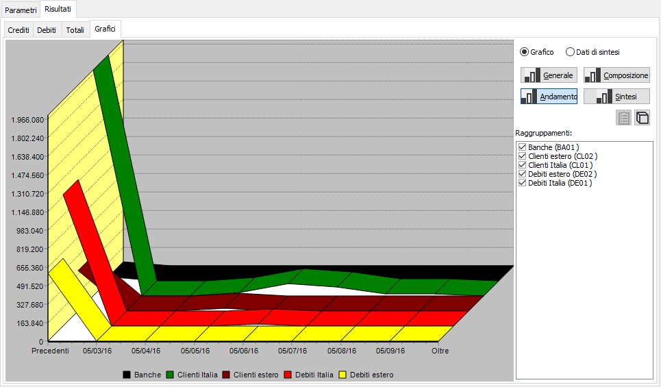
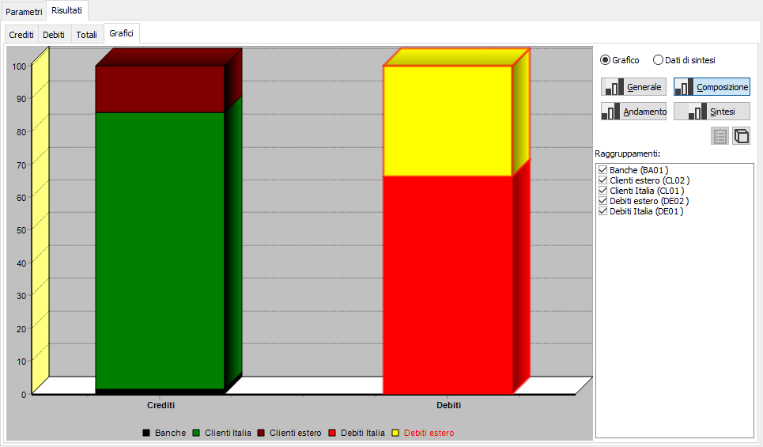
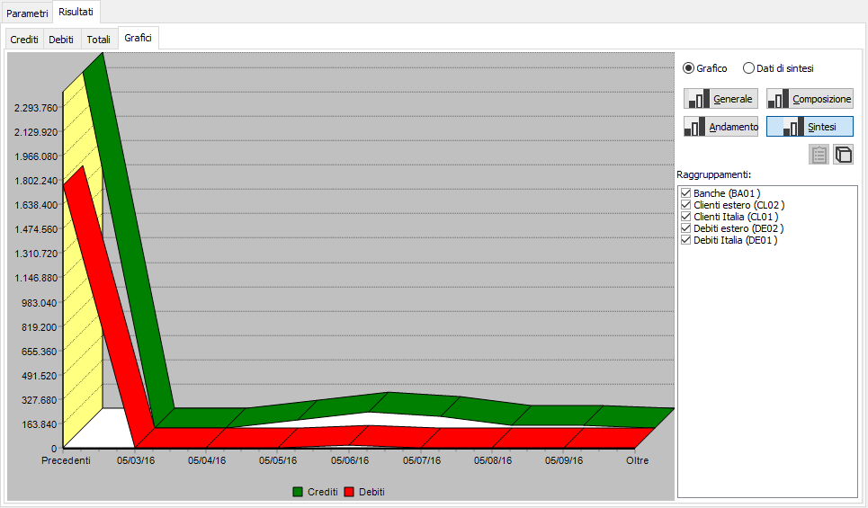
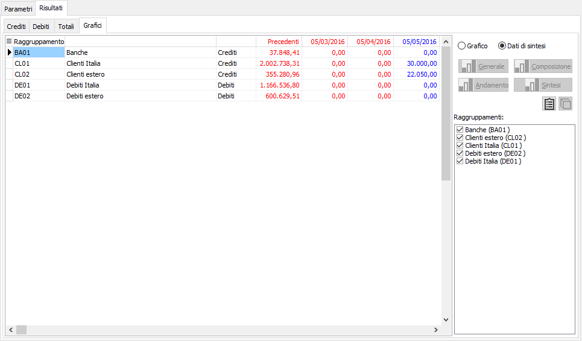
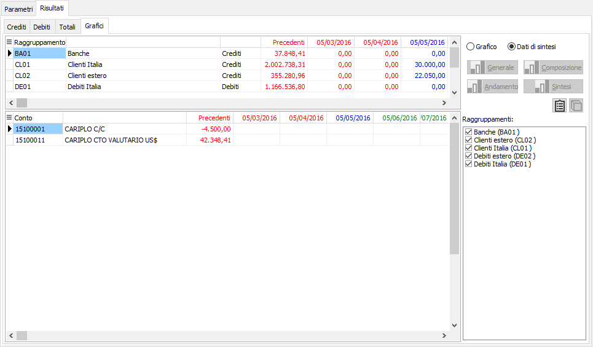

Il pulsante presente sulla maschera dei grafici, consente di alternare la visualizzazione del grafico in tre o due dimensioni.
Il pulsante presente sulla maschera dei grafici, consente di alternare la visualizzazione del grafico in tre o due dimensioni.Analisi flussi finanziari
Il programma permette di ottenere una pianificazione teorica dei propri flussi di cassa, tenendo conto sia dei crediti verso clienti che dei debiti verso fornitori.
Oltre alla normale movimentazione gestita dalla contabilità è possibile tenere in considerazione sia dati presunti (legati quindi a documenti ancora da evadere o da fatturare), sia dati extracontabili registrando movimenti che non hanno ancora avuto la loro manifestazione numeraria in contabilità attraverso l’apposita funzione di manutenzione.
Includendo sia debiti che crediti verrà calcolato un prospetto finale di riepilogo che riporta i saldi di cassa alle varie date, evidenziando eventuali deficit.

Il “Tipo elaborazione” definisce quali tipologie di documenti e movimenti analizzare, se clienti, fornitori, sottoconti o tutti. In base al tipo elaborazione impostato vengono attivati o disattivati i campi di selezione non inerenti quali i clienti, i fornitori e i sottoconti.
Il “Tipo stampa” definisce la tipologia di stampa che si vuole ottenere, se analisi o scadenzario, quest’ultima analisi, disponibile solo a stampa, permette di dettagliare i movimenti che concorrono alla formazione dell’analisi.
Nelle date di movimento o di scadenza possono essere indicate le date con cui si vuole iniziare e terminare l’elaborazione dei movimenti.
Il flag “Ordini comprensivi d’IVA” permette di includere nel calcolo i dati relativi agli ordini comprensivi di IVA oppure solo i dati relativi ai soli valori imponibili.
Il flag “Ricalcola scadenze in ordini” permette di ricalcolare le scadenze relative agli ordini da evadere, altrimenti vengono utilizzate le scadenze presenti sugli ordini. Nel caso di ricalcolo viene applicata la modalità di pagamento alla data di consegna dell’ordine, nel caso in cui la data di consegna sia precedente alla data di stampa la modalità di pagamento viene applicata alla data di stampa stessa.
Nel “Periodo” deve essere indicato il numero dei giorni che intercorre tra la data di stampa e le date successive, nel caso in cui nel periodo venga impostato a 30, o ad un suo multiplo, è possibile attivare il flag "Utilizza calendario commerciale", che permette di calcolare le date passate e future considerando il calendario commerciale.
Le date definiscono le colonne dell'analisi; vengono calcolate in automatico dalla data di stampa in base ai giorni indicati nel periodo e al flag di utilizzo del calendario commerciale, variando la data di stampa vengono ricalcolate le altre date, che sono comunque variabili.
Il campo “Includi ordini” permette di includere nell’elaborazione gli ordini clienti da evadere e/o gli ordini fornitori da ricevere, in base al tipo di elaborazione impostato. Le scadenze saranno calcolate in base alla data di consegna dell’ordine e in base al flag “Ricalcola scadenze in ordini”, gli importi possono essere al netto o al lordo dell’Iva in base al flag “Ordini comprensivi d’IVA”.
Il campo “Includi Ddt” permette di includere nell’elaborazione i Ddt clienti e/o fornitori da evadere, in base al tipo di elaborazione impostato.
Il campo “Includi Fatture” permette di includere nell’elaborazione le fatture clienti e/o fornitori da contabilizzare, in base al tipo di elaborazione impostato.
Il campo “Includi scoperto” permette di includere nell'elaborazione le partite aperte dei clienti e dei fornitori e le partite contabili aperte, in base al tipo elaborazione impostato. In particolare le partite contabili vengono incluse se viene impostato di elaborare solo i sottoconti o tutti i conti.
Il campo “Includi esposizione” permette di includere nell'elaborazione le scadenze in esposizione, mentre il campo “Includi saldi banche” permette di includere nell’elaborazione il saldo contabile dei conti definiti come banche (sottoconti collegati a mastri identificati come banche) e non gestiti a partite (campo “Partite contabili” non attivo nel sottoconto). Nel caso in cui venga impostato di includere sia l’esposizione che i saldi delle banche gli effetti contabilizzati vengono riportati nel saldo del conto bancario e non del conto del cliente.
Il campo “Includi movimenti extracontabili” permette di includere nell’elaborazione i movimenti extracontabili, presenti nei movimenti cash flow, come abbiamo visto nel paragrafo precedente.
Attivando il campo “Controvalore” viene effettuata la stampa nel controvalore della moneta di conto e non nella divisa originaria dei documenti.
Impostando il tipo stampa a scadenzario è possibile effettuare l’ordinamento dei dati per scadenza o per conto, e la stampa dei totali per scadenza o per mese. Impostando il tipo stampa ad analisi è possibile effettuare il raggruppamento dei dati per conto di presentazione impostato sulle scadenze, sui documenti per i bonifici clienti o sui clienti e/o fornitori.
Effettuando l'elaborazione con Tipo stampa impostato ad Analisi viene presentata una pagina Risultati; qui sono presenti le linguette relative ai dati dei crediti, dei debiti, dei totali e dei grafici, in base ai dati selezionati nella maschera dei parametri.
Nei “Crediti” vengono riportati i valori relativi ai clienti e ai conti definiti come attività, ad esempio le banche.

Nei “Debiti” vengono riportati i valori relativi ai fornitori e ai conti definiti come passività.

Nei “Totali” viene visualizzato un prospetto finale di riepilogo che riporta i saldi dei crediti, dei debiti e l’effettivo saldo.

La linguetta “Grafici” viene visualizzata solo nel caso in cui siano stati definiti i raggruppamenti e almeno uno dei conti elaborato faccia parte di un raggruppamento. Di default vengono selezionati automaticamente tutti i raggruppamenti e di questi viene visualizzato il grafico generale, è possibile deselezionare manualmente uno o più raggruppamenti.
Il pulsante presente sulla maschera dei grafici, consente di alternare la visualizzazione del grafico in tre o due dimensioni.
Il pulsante consente la visualizzazione del grafico Generale.

Il pulsante consente la visualizzazione del grafico lineare.

Il pulsante consente la visualizzazione del grafico di composizione.

Il pulsante consente la visualizzazione del grafico lineare dei dati di sintesi.

L'analisi della composizione dei raggruppamenti può essere visualizzata tramite la selezione della voce “Dati di sintesi”.

 Il pulsante, presente sulla maschera dei dati di sintesi, consente di attivare o disattivare la visualizzazione del dettaglio dei conti relativi ai raggruppamenti visualizzati sopra.
Il pulsante, presente sulla maschera dei dati di sintesi, consente di attivare o disattivare la visualizzazione del dettaglio dei conti relativi ai raggruppamenti visualizzati sopra.
